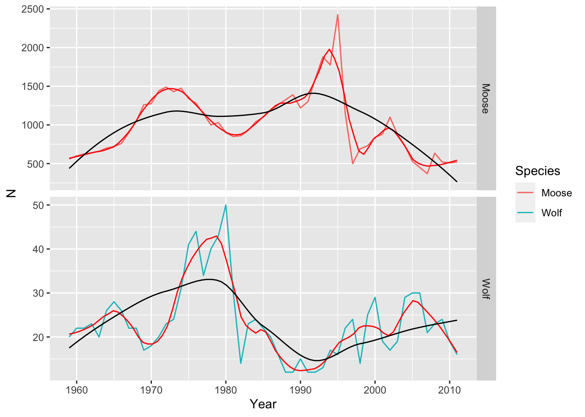
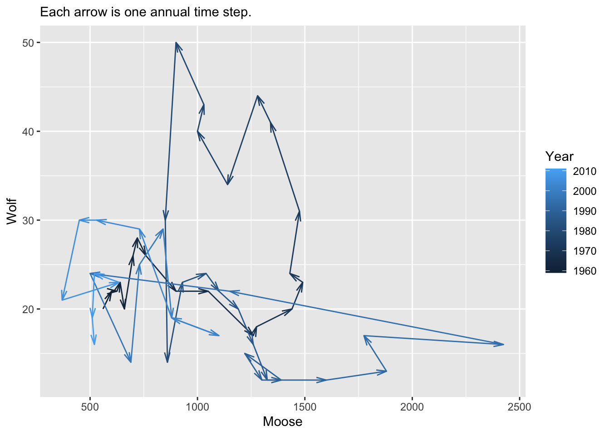
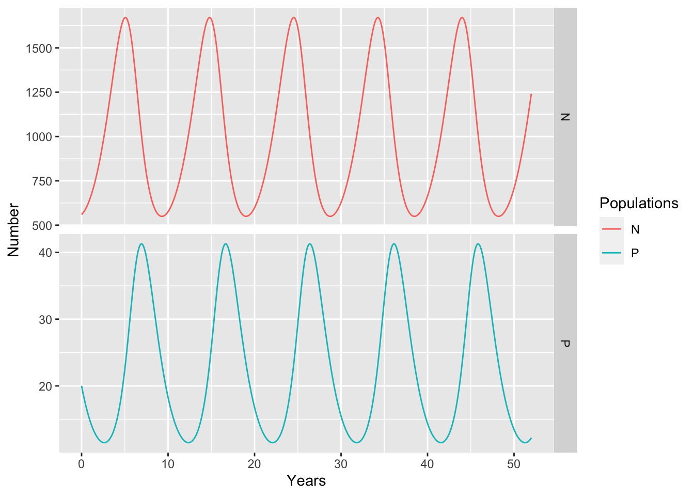
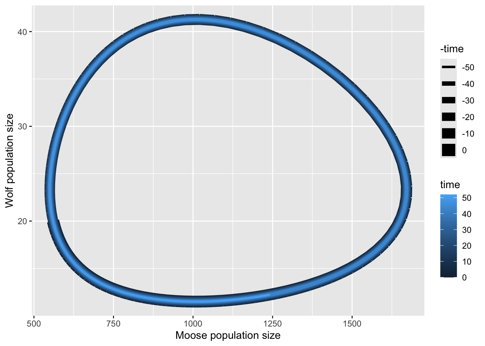

getwd()[1] "/Users/stevenmh/Courses/intro_to_ecology"
In this chapter, you will,
isleRoyaleData.csv.
isleRoyaleData.csv in your working directory, Rwork.We have seen examples of how the distribution and abundance of organisms are influenced by
Here we take a closer look out how predator-prey interactions affect populations, and precisely how those interactions can be described.
As our example, we focus on the pair-wise predator-prey relationship between moose (Alces alces) and wolves (Canis lupus) on Isle Royale National Park (USA) in Lake Superior. The moose are herbivores, that is, plant enemies, particularly of balsam fir (Abies balsamea) which makes up about 50% of their diet. Aside from severe winter weather and wolves, another enemy of the moose is the winter tick (Dermacentor albipictus), which can sap the health of moose and reduce survival. The wolves have an enemy of their own, canine parvovirus which can kill wolves. In spite of all this complexity, here we investigate the mathematical mechanics of how predators and prey influence each others abundances, and whether we can learn anything about their biology.
When we use mechanistic models in science, we are following the scientific method we may have first been exposed to in K-12 education:
A mathematical model of predator and prey is a hypothesis about how species interact. You will informally evaluate how well a particular model can explain patterns in our data.
Our data set comes from censuses of moose and wolf populations on Isle Royale from 1959 to 2011 collected by a number of different researchers over that time (Vucetich and Peterson 2009).
The data you have available are numbers of moose and wolves each year, 1959-2011.
What you know:
For this chapter, our hypothesis is that the prey-dependent Lotka-Volterra predator-prey model is a reasonable description of the mechanisms driving moose-wolf dynamics. This model makes these predictions:
In order to evaluate the hypothesis you will have to answer about a dozen questions along the way, as you go. Don’t skip these questions.
These questions will let you estimate the constant parameters of the Lotka-Volterra model:
First, open R using RStudio, and set your working directory. You can do this in two ways:
setwd("C:/Users/paltrowg/BIO209W/Rwork")You can confirm or get your current working directory using this:
getwd()[1] "/Users/stevenmh/Courses/intro_to_ecology"so when I do that, you can see my working directory is the one for this book.
Before you proceed, make sure your working directory is your Rwork directory.
Second, use RStudio to create a new file of the type “R script”. Save it using a name that reflects this chapter, and end the file name with “.R” or “.r”.
Third, add a comment as a brief description of the script, and load any R packages you know you will need.
## This script is for chapter XX in Hank's Intro to Ecology primer.
## We always use...
library(tidyverse)
## or usually just ggplot2 and dplyr packages within the tidyverse.In this chapter, we need a new package called deSolve. This package solves differential equations and so will let us implement the differential equations of our predator-prey model. First use code below, or the Tools menu in RStudio to install deSolve. Don’t do both.
## For this chapter we also use deSolve
install.packages("deSolve")Then load the package.
library(deSolve)Make sure that your data file is in your Rwork directory. and is still just a CSV file.
Open the data file (.csv file) in a spreadsheet application, a text editor, or in RStudio. Do not save it the file the spreadsheet application because it will try to change the format.
Close the data file, and do not save it. If you save it, chances are good that the application will try to save it in a different format.
Import the data or read the data into R. Here is code for that. You will notice that we use a function that expects a CSV file. You will also notice that we use an argument to tell R how many lines of metadata to skip so it reads only the data and its column headings.
## NOTE that we skip the two lines because they are metadata
d <- read.csv("isleRoyaleData.csv",
skip=2)Look at your data with one of these two:
# glimpse(d)
# or
str(d)'data.frame': 106 obs. of 3 variables:
$ Year : int 1959 1960 1961 1962 1963 1964 1965 1966 1967 1968 ...
$ Species: chr "Moose" "Moose" "Moose" "Moose" ...
$ N : int 560 600 625 640 660 700 720 760 900 1050 ...A time series graph of the our data reveal how the populations change over time (Fig Figure 11.2).
ggplot(d, aes(Year, N, colour=Species)) + geom_line() +
facet_grid(Species~., scales = "free") +
geom_smooth( se=FALSE, span=.2, color="red", linewidth=.5) +
geom_smooth( se=FALSE, span=.7, color="black", linewidth=.5)
ggsave("MooseWolfTS.png", height=5, width=6)
Next, let’s describe a model of predator and prey interaction. Refer back to the lectures for more information.
All of our mathematical and conceptual models of populations have the same form:
Rate of change = rate of gains - rate of losses
Sometimes these gains and losses are combined:
Rate of change = net rate of gains
Exponential growth: \[\frac{dN}{dt} = bN-dN = (b-d)N = rN\]
Logistic growth (density-dependence): \[\frac{dN}{dt} = rN\left((1-\frac{N}{K}\right) = rN - \frac{r}{K}N^2\]
Mechanistic models such as there have parameters and state variables. State variables are the quantities that vary through time, such as population size. In contrast, parameters are constants that determine how fast the state variables change. In our exponential growth equation, \(dN/dt=rN\), \(N\) is the state variable, and \(r\) is the parameter.
Next we create a pair of rate equations where one species’ loss is another’s gain.
Maybe the simplest predator prey equation is essentially two-species exponential growth, where exponentially growing prey, \(N\), is partly eaten by exponentially growing predators, \(P\). First the prey,
\[\frac{dN}{dt} = rN - aN\] where \(aN\) is the rate of loss of prey to predators; this is the rate at which predators attack and kill prey. The units of \(r\) and \(d\) are individuals per individual per unit time.
The predators increase only because they kill and eat prey, \(aN\), and only a fraction of these, \(b\), get converted into new predators, \[\frac{dP}{dt} = baN - mP\] and predators die at rate \(mP\). The parameter \(b\) is the efficiency with which prey are converted into predators, that is, are ingested, assimilated by the predator, and actually lead to growth and reproduction rather than cellular respiration. The units of \(b\) are predators per prey per unit time, and the units of \(m\) are the same as those of \(r\) and \(d\), individuals per individual per unit time.
If we made all these assumptions, and did some algebraic rearrangement, we would learn that predators abundance is predicted to be a constant fraction of prey abundance, \[P = \frac{ba}{m}N\] where both populations will grow exponentially as long as \(r>d\) (why?).
This model is sometimes referred to as ratio-dependent predation a completely different reason: predation rates can be expressed in terms of the number of prey per predator time number of predators, or \[aN = a\frac{N}{P}P\] .
The most widely taught predator-prey equation was developed independently by Vito Volterra and Alfred Lotka. Here, the predation rate is expressed as a function of prey density rather than the ratio of prey to predators.
\[\frac{dN}{dt} = rN-aNP\] \[\frac{dP}{dt} = baNP -mP\] In the above equations,
This model is famous for its oscillations. Do our data show evidence of oscillations? Yes they do. Look at the figures below to estimate how often they undergo a cycle.
dw <- pivot_wider(d, names_from=Species, values_from=N)
ggplot(dw, aes(Moose, Wolf, colour=Year)) +
geom_path(arrow=arrow(length=unit(3, "mm"), angle = 15, type = "open")) +
labs(subtitle="Each arrow is one annual time step.")
ggsave("MooseWolfPP.png", height=5, width=5.5)
One thing we can learn from simple models are the equilibria they predict. An equilibrium is a point when the populations stop bouncing around. At these points, the populations stop changing - their growth rates equal zero. By setting growth rates equal to zero, we can use the model to make predictions about what those equilibria are.
Another name for an equilibrium is an attractor. We call it an attractor because the population appears to be attracted to it. If some event pushes the abundance of a population away from an equilibrium, the equilibrium seems to attract the population back to it.
Here we solve for the equilibria of the Lotka-Volterra predator-prey model. We set the prey population growth rate equal to zero, and then use algebra to simplify the expression. This is one way we learn the logical consequences of prey growth being zero.
\[0 = rN-aNP\] If we divide both sides by \(N\), we get \[0 = r-aP\] and rearranging we get \[P=r/a\] This means that the prey population growth rate will be zero when the predator population size is \(r/a\). This happens to be the intrinsic rate of increase divided by the attack rate.
If the prey population stops changing when \(P=r/a\), do you think the predator population will stop growth too?
Next, we set the predator population growth rate equal to zero, and then use algebra to simplify the expression.
\[0 = baNP - mP\]
If the prey population stops changing when \(P=r/a\) and the predator population stops changing when \(N=m/(ba)\), this means that at these two abundances, the population sizes will not change. Births and deaths will continue to occur, and they will perfectly balance each other. These are the expected equilibria for these two populations under this set of assumptions. Something different happens when \(N\) and \(P\) are not at these values.
We abbreviate these equilibria as \(N^*\) and \(P^*\), which we refer to as “N star” and “P star”.
If our populations are regulated approximately according to these rules, we might expect that the average abundances of these populations are approximately equal to these values.
Find the average or mean population size of the wolf population in our data set. Look at the figure and try to guess.
Find the average or mean population size of the moose population in our data set. Look at the figure and try to guess.
Use R to see how close your guess is.
View(dw)
mean(dw$Wolf)
mean(dw$Moose)Next we find values for the model parameters. It will help to have just pieces of our data sets:
# the number of observations or rows of data
n <- nrow(dw)
# predator and prey numbers for all years except the last.
Pt <- dw$Wolf[-n]
Nt <- dw$Moose[-n]
# predator and prey numbers for all years except the first
Pt1 <- dw$Wolf[-1]
Nt1 <- dw$Moose[-1]One way to think about the intrinsic rate of increase of a population, \(r\), is that it is the maximum per capita growth rate. A crude way to estimate that is to find the maximum observed value in our data.
# each year's r
r <- log(Pt1/Pt)
r [1] 0.09531018 0.00000000 0.04445176 -0.13976194 0.26236426 0.07410797
[7] -0.07410797 -0.16705408 0.00000000 -0.25782911 0.05715841 0.10536052
[13] 0.13976194 0.04255961 0.25593337 0.27958486 0.07061757 -0.25782911
[19] 0.16251893 0.07232066 0.15082289 -0.51082562 -0.76214005 0.49643689
[25] 0.04255961 -0.08701138 -0.09531018 -0.22314355 -0.28768207 0.00000000
[31] 0.22314355 -0.22314355 0.00000000 0.08004271 0.26826399 -0.06062462
[37] 0.31845373 0.08701138 -0.53899650 0.57981850 0.14842001 -0.42285685
[43] -0.11122564 0.11122564 0.42285685 0.03390155 0.00000000 -0.35667494
[49] 0.09097178 0.04255961 -0.23361485 -0.17185026# the maximum
rMax <- max(r)
rMax[1] 0.5798185It is worth noting that \(aN\) is the rate at which the average wolf kills moose. We will estimate the attack rate, \(a\), by realizing that the predator equilibrium equals \(r/a\), or \[a = r/P^*\] where our estimate of \(P^*\) is the average size of the wolf population.
a <- rMax / mean(dw$Wolf)
a[1] 0.0248829One way to think about the predator mortality rate, \(m\), is that it is the maximum rate per capita rate of decline. Put another way, it is the minimum per capita population growth rate, and this will be a negative number.
# mortality, estimated as the minimum log( P[t+1] / P[t] )
m <- abs( min(r) )
m[1] 0.7621401The predator conversion efficiency is the prey-dependent birth rate of predators. Thus, for each prey killed, an average predator will produce and successfully rear \(b\) offspring. Given that only a few females in a population produce pups, and that number is averaged across the entire wolf population, that number is relatively small. However, a single moose is pretty big and so goes a long way.
Here we use our previous estimates of \(a\), \(m\), and \(N^*\) to estimate \(b\), where \[N^* = \frac{m}{ba}\] and \[b=\frac{m}{aN^*}\]
b <- m / (a * mean(dw$Moose))
b[1] 0.03036836This is how you tell R what the differential growth equations are.
predpreyLV <- function(t, y, p) {
with( as.list( c(y,p) ), {
dN <- r*N - a*N*P
dP <- b*a*N*P - m*P
return( list( c(dN, dP) ))
})
}Here you tell R what the parameters, initial abundances, and years are.
parms <- c(r = rMax, a=a, b=b, m=m)
y0 <- c(N=560, P=20)
times <- seq(0, 52, by=0.1)Here you use the deSolve package to integrate the rate equations over our time points.
out <- ode(y=y0, t=times, fun=predpreyLV, parms=parms)Next we rearrange the data, and graph the time series.
op <- out %>% as.data.frame() %>%
pivot_longer(cols=N:P, names_to = "Populations",
values_to="Number")
ggplot(op, aes(x=time, y=Number, colour=Populations)) + geom_line() +
labs(x="Years") + scale_color_discrete(breaks=c("N","P")) +
facet_grid(Populations~., scales="free")
ggsave("LV_MooseWolfTS.png", height=5, width=6)
We can rearrange the data, and graph the phase plane plot (Fig. Figure 11.5).
outw <- out %>% as.data.frame()
ggplot(outw, aes(N, P, linewidth= -time, color=time)) +
geom_path() +
labs(x="Moose population size", y="Wolf population size" )
ggsave("LV_MooseWolfPP.png", height=5, width=6)
Once you are confident that you got something reasonably correct, assess the predicted dynamics.
Write a sentence or two describing these data in your list.
How could you test the effect of the parvovirus that began to affect the wolves in 1981?
For the next exam, be able to,
Turn in two documents.
The first document is your R script.
In the second document, provide